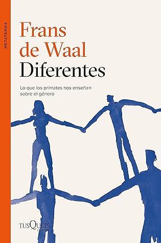

Diferentes: Lo que los primates nos enseñan sobre el género
Reseña por Jorge I. Zuluaga

Ver detalles · Ver reseña en GoodReads (necesita cuenta)
Les confieso que empecé a leer este libro básicamente porque estaba escrito por Frans de Waal, un reconocido etólogo y primatólogo que es autor de varios libros de divulgación sobre la inteligencia y las sociedades de los animales, incluyendo los humanos.
Como me pasa a veces, antes de empezar un libro trato de evitar las descripciones o las reseñas del texto para no arruinarme la "trama" —incluso si el libro es un ensayo como este—; a veces, ni siquiera leo la contraportada y me meto de cabeza en el texto, jugándomela por el contenido.
Naturalmente, por el subtítulo entendía de qué podía tratar el libro. Pero no pensé en el tema espinoso en el que me estaba metiendo. Cuando terminé la introducción ya era demasiado tarde: tenía que terminar el libro —es una manía mía— aunque sabía que iba a ser bastante duro, y me explico.
"Diferentes" es un libro que aborda la pregunta de si las diferencias que observamos en las sociedades humanas entre el comportamiento de personas que se identifican como hombres (incluyendo personas que cromosómicamente lo son —varones o machos para usar el término biológico— y personas que no lo son pero que viven una vida interior de hombres: los hombres transexuales) o como mujeres (cromosómicas y transexuales) son, como proponen muchas filósofas, antropólogas y sociólogas del feminismo y la teoría queer (y lo pongo en femenino porque son mayoría), únicamente el resultado de procesos sociales y culturales, o si hay un importante componente biológico. Es decir, si hay diferencias "esenciales" en los comportamientos que se asocian hoy con el género, que son siempre determinadas por el sexo de nuestros cuerpos o de nuestros cerebros.
Sabía que iba a sufrir con el texto porque, desde hace un par de años, vengo leyendo mucha literatura feminista y esta pregunta recibe en ese contexto, con abundantes argumentos desde la filosofía, la antropología, la sociología y la historia, una respuesta bastante clara: si bien nuestros cuerpos son importantes, el género está determinado casi exclusivamente por la socialización, por la cultura. A cualquier otra posición, especialmente a las más extremas, se la llama en el contexto del feminismo "esencialismo". De acuerdo con las teorías feministas, los esencialismos refuerzan y favorecen estereotipos que dañan a las personas y dan un sustento "científico" (o cientifista) a la estructura de poder y exclusión que llamamos patriarcado.
Como ven, la discusión está servida. Mi experiencia previa me decía que iba a tener que enfrentarme a la disonancia cognitiva de leer un texto de un autor muy autorizado, respaldado por su experiencia de campo y que posiblemente defendería una posición esencialista, contraria a la posición que ahora comparto con las teorías feministas.
¿Y qué pasó?
Efectivamente, descubrí que de Waal es un esencialista. Pero no cualquier esencialista. El autor parece estar ampliamente informado de las posiciones teóricas que existen en el seno de la comunidad feminista y, naturalmente, cuenta con el increíble peso de la experiencia y las evidencias científicas obtenidas después de pasar una vida entendiendo la mente y las sociedades de los simios antropoides, especialmente chimpancés y bonobos.
Sus conclusiones, a muy grandes rasgos, son presentadas de forma clara en el texto: la idea (muy extrema para el autor) de que la biología es irrelevante para determinar las preferencias y comportamientos que asociamos con el género es absurda. Según los argumentos de de Waal, en todos los simios antropoides, pero aún más en la mayoría de los primates —incluso en algún aparte lo señala, entre los mamíferos—, las diferencias de comportamiento entre individuos de ambos sexos son claras.
Pero esto no debe sorprendernos: las diferencias biológicas entre machos y hembras están ahí, nadie las niega. Lo más controversial es que actitudes como el cuidado de las crías, la violencia, la tendencia a la dominación social y una mayor actividad física en la infancia, según de Waal, pueden asociarse claramente con ambos sexos en animales no humanos. Para no darle más vueltas: para de Waal las hembras primates cuidan, los machos saltan y pelean. Bueno, con algunos matices interesantes.
Después de leer todo el libro, es difícil no reconocer los patrones que señala de Waal en los experimentos y en la literatura que cita. Al fin y al cabo, es él quien tiene la experiencia y el conocimiento de primera mano sobre otros animales.
Sin embargo, hay una falla que atraviesa toda su argumentación, y que creo puede dejar un espacio para la duda.
La conclusión de que los comportamientos típicamente femeninos y típicamente masculinos son comunes a todas las especies de nuestra rama del árbol de la vida surge de la observación, justamente, de científicos y científicas humanas que han estado expuestos desde pequeños a estas diferencias y en culturas donde se consideran esenciales. Primer problema.
En segundo lugar, y esto me sorprendió, de Waal parece desconocer que todos los ejemplos que presenta en su libro son de animales sociales. Es decir, no se puede asegurar definitivamente si esos comportamientos "típicamente" femeninos y masculinos no son también el producto de sus propias sociedades.
Otro punto en contra de la conclusión (esencialista en toda regla) de de Waal es que, como él mismo señala con muchos ejemplos, cada sociedad de primates es diferente. Las jerarquías (que son un fenómeno universal y definitivamente de base biológica), la relación con las crías y la responsabilidad de la búsqueda de alimento varían a veces sustancialmente de una especie a otra. Incluso grupos de animales de la misma especie que ocupan territorios diferentes tienen sociedades con distintas reglas. Si es así, ¿cómo podríamos usar a otros simios antropoides para juzgar un fenómeno tan complejo como el binomio género/sexo en nuestra propia especie? ¿No es acaso válida la pregunta de si tal vez una de las claves de la singularidad humana es precisamente que, en nuestra especie, el género es casi exclusivamente un fenómeno social? En otras palabras, ¿no podría ser que la especie humana fuera la primera real y esencialmente igualitaria?
Al margen de la discusión y de si ustedes están de acuerdo o no con las posiciones de de Waal, el libro deja muchas enseñanzas interesantes que, sea uno esencialista o no, permiten entender la determinación biológica o social del género.
Así, por ejemplo, la increíble capacidad de los primates desde la más temprana edad para reconocer a individuos de su propio sexo; el papel de la imitación, que se manifiesta desde la más temprana edad, de individuos de tu propio sexo y que determina tus preferencias y comportamientos; la universalidad de la homosexualidad y, más en general, de la libertad de elección y de preferencia o de su movilidad (hoy me gusta un macho, mañana una hembra); el placer por el placer como un mecanismo profundamente biológico con una función que trasciende la reproducción; las relaciones de atracción sexual entre especies, con historias como las de chimpancés machos que sufren erecciones cuando ven hembras humanas y orangutanes que han intentado violar a mujeres. Y un largo etcétera.
En fin. La discusión es tan interesante, los datos tan ricos y Frans de Waal escribe tan bien, que sea que quieras encontrar una confirmación para tus creencias esencialistas o sea que quieras poner a prueba tu convencimiento de una de las suposiciones más importantes de la teoría feminista, este libro es una verdadera joya y debería ser leído con cuidado.